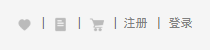
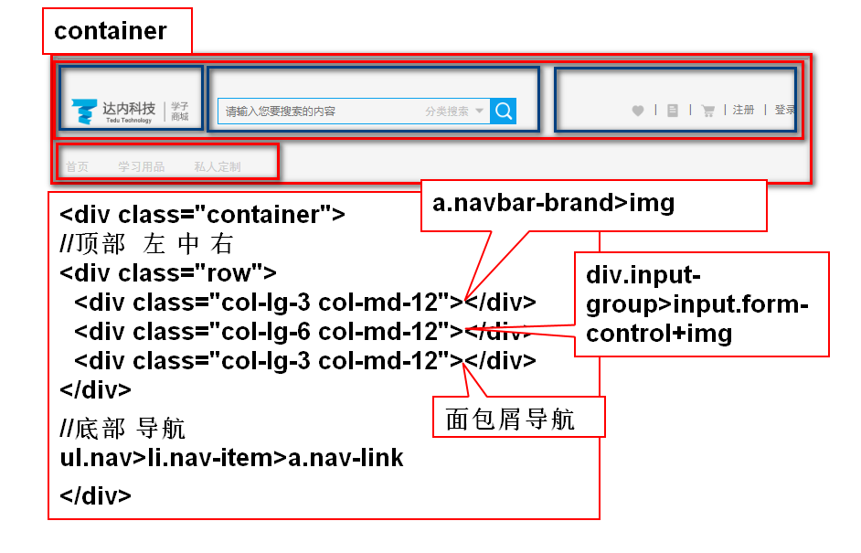

4.面包屑导航
常用于有路径关系的导航
ul.breadcrumb>li.breadcrumb-item
每个li中间连接的符号，需要重写
.breadcrumb-item + .breadcrumb-item::before{
content: '>';
}
5.进度条
①普通进度条
div.progress>div.progress-bar.w-50.bg-danger
父div是进度条的槽
子div是进度条，子div的宽度，是进度条的进度
子div背景，是进度条的颜色
②带条纹的进度条
在子div添加.progress-bar-striped
③带动画的条纹进度条
< div class="progress-bar w-100 bg-secondary progress-bar-striped progress-bar-animated" >< /div >
BOOT定制:scss
bootStrap最重要：响应式+栅格布局+scss
1.CSS有很多缺点
语法不够强大，没有变量，没有合理的样式复用机制
导致难以维护
我要使用动态样式语言，赋予css新的特性
提高样式语言的可维护性
常用的动态样式语言
1.SCSS/SASS （scss兼容sass,scss更接近css语法）
2.stylus
3.less
1.什么是scss scss是一款强化css的辅助工具 它和css语法很像。 它在css的语法基础上，添加了变量，嵌套，混合，导入，函数等高级功能。 这些拓展命令让scss更加强大和优雅 浏览器不能直接解析scss文件，需要在想项目中把scss转义成css文件，让浏览器解析 scss可以让css开发更高效 2.scss的安装使用 scss在服务器端使用 nodejs v8.11以上，才可以使用scss 1.在线安装scss 在cmd中，输入命令npm install -g node-sass 2.无网络安装 找到sass的4个文件， 找到nodejs的安装路径,把sass4个文件放入node文件夹 在cmd中使用node-sass -v 验证版本 3.SCSS文件转换成css文件 ①单文件的转换 1.创建scss/01.scss文件 2.在项目路径下，打开黑窗口 3.输入下面命令 node-sass scss文件路径 css文件路径 ②多文件转换 文件夹--->文件夹 node-sass scss文件夹 -o css文件夹 ③单文件监听转换 node-sass -w scss/01.scss css/01.css ④多文件监听，监听一个文件夹中所有文件 node-sass -w scss文件夹 -o css文件夹
1.变量
使用$声明变量，变量名可以包含-，_
命名规则基本与css选择器相同，尽量做到见名知意
变量声明在{}外，整个scss文件都可以使用。
变量声明在{}内，只有当前{}内可以使用
！default规则，如果此变量在之前已经声明赋值了，那么使用之前的值。如果之前没有声明赋值，使用现在值
2.嵌套
1.选择器的嵌套
#content{
width:$my_width;
div.top{
margin:$my_width;
h1{font-size:46px;}
p{padding:12px;}
}
div.bottom{
border: $my_border;}
}
自动转换成css的后代选择器
#content { width: 521px; }
#content div.top { margin: 521px; }
#content div.top h1 {font-size: 46px; }
#content div.top p {padding: 12px; }
#content div.bottom { border: 1px solid #00f; }
2.伪类的嵌套
需要在伪类选择器之前添加&，如果不添加，会生成一个空格导致伪类失效
a{width:21px;
&:hover{width:20px}
}
练习 使用scss完成
$myblue:#0aa1ed;
$fontcolor:#fff;
$myheight:2.5rem;
$fontsize:0.8rem;
3.属性的嵌套
div{
border:{style:solid;width:1px;color:#fff;};
}
4.群组选择器的嵌套
nav,div,header,footer{
a{width:100px;}
}
练习
一个div#main.200px*200px;红色背景
鼠标悬停，过渡到黄色背景，并且变为圆形
使用scss编写样式
3.导入
在scss的语法中，如果一个scss文件以下划线开头，
那么这个scss文件就是一个局部scss文件
scss文件转换成css文件的时候，不会把局部scss文件进行转换
只转换，不以下划线开头的scss文件(全局scss文件)
导入的语法 @import "name";
真正导入的文件名称 _name.scss 掐头去尾
导入时，不写_,不写.scss后缀
局部文件被导入后，局部文件中的样式，会在全局文件转换的css中生成。
同时，局部文件中声明的变量，可以在全局文件中使用
4.混合器
把多个选择器都会使用的样式，封装进一个混合器
需要使用的这些样式选择器，可以调用这个混合器
实现代码的重用。
关键字 声明混合器 @mixin 混合器名称(参数1，参数2){样式}
调用混合器 @include 混合器名称(参数1，参数2)
混合器使用场合---css hack
5.继承
一个选择器，可以使用另外一个选择器的所有样式
.my1{
width:100px;height:100px;
}
.my2{
background:#f00;
@extend .my1;
}
转换之后，继承的表现方式，是群组选择器
.my1, .my2 {
width: 100px;
height: 100px; }
.my2 {
background: #f00; }
练习
在选择器.my-border定义1px solid transparent
设置宽度400px 左外边距20px
在选择器.my-bottom-border中，继承.my-border
并设置底边框为红色，当鼠标悬停时，底边框为蓝色
6.运算
加减乘除余
如果必要，会在不同单位间转换(前提是scss能转)
①加法
+ 除了做加法，还做字符串拼接
字符串拼接的时候
如果用有引号的字符串拼接无引号的，结果带引号的
如果用无引号的字符串拼接有引号的，结果不带引号
②减法
由于变量声明的时候可以使用-
系统分不清楚 - 是不是属于变量名称
所以我们写减法的时候，要在 - 前后添加空格
width:$my-w - $my-h;
③除法
在scss中， / 的作用是分隔符
只有下面几种情况，我们判定为除法
1.运算式的两边，有变量，或者函数返回值的时候，是除法
width: $w/2;
2.运算式被()包裹的时候，是除法
height:(500px/2);
3.运算式是其他算术运算式的一部分的时候，是除法
margin-left:5px+8px/2px;
④字符串的插值操作
使用#{}在字符串中做插值
content: "liangliang ate #{50+32} baozis";
⑤颜色的运算
#112233+#445566=#557799
#rrggb rgb(r,g,b) 都是分段计算，红+红 绿+绿 蓝+蓝
rgba的元素，需要透明度相同，才允许计算
background:rgba(11,22,33,0.6)+rgba(22,33,44,0.6);
1.scss预定义很多函数，有些函数直接可以在css中使用
rgba(r,g,b,alpha)
hsl(h,s,l)
hue:色调 取值0~360 3个色段 0~120 120~240 240~360
saturation：饱和度 0.0%~100%
lightness:亮度 0.0%~100%
2.数学函数
round($v) 四舍五入
ceil($v) 向上取整
floor($v) 向下取整
min($v1,$v2....)
max($v1,$v2....)
random 随机数
3.字符串
unquote($v) 去掉双引号
quote($v) 加双引号
to_upper_case($str) 把$str转成大写
to_lower_case($str) 把$str转成小写
4.自定义函数
@function get_msg($a,$b){
@return $a*$b+($a/$b);
}
div{
width:get_msg(3,2)+px;
}
练习
定义一个带参数的函数get-width($n)
函数内定义两个变量，分别是60px和70px
函数的返回值为，$n乘以两个数的最大值，加上$n乘以两个数的最小值。把返回值赋给div的width属性
min() max()
@if(){}
@else if(){}
@else{}
bool的小括号可以去掉
学子首页，产品列表页，产品详情页 注意：整个学子不是使用响应式布局设计，也没有使用boot 有一些细节，不去实现 在项目中创建一个文件夹，pro 在pro中，把css文件夹创建好，把图片资源导入
1.使用面包屑导航完成  2.作业2，boot项目 头部 